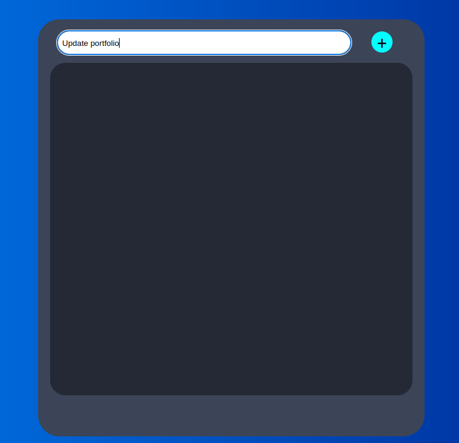
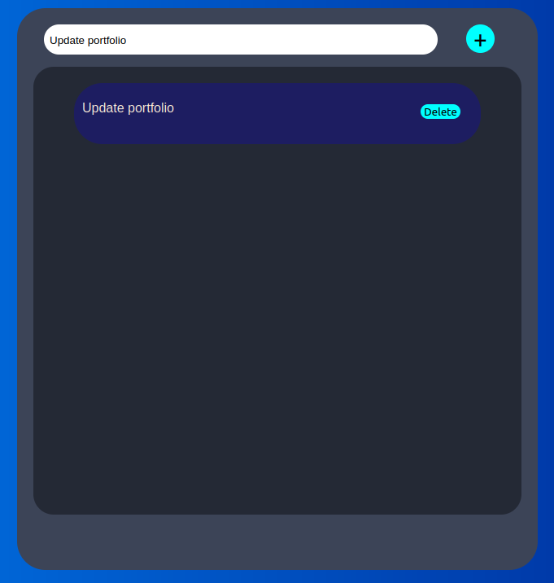
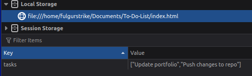

Description
As most beginner programmers make, I too have made a simple to do list app. This app allows users to write a task and add it to the window. This data is then saved to the browser's local storage to prevent the data from being wiped on refresh.
Functionality
Basic functionality:
-
To add a task, simply type in the text box and press the plus button.
  -
To delete a task simply press the delete button loacted on the new task.
-
The app stores data in the browser's local storage in order to prevent the data from being lost on refresh.
